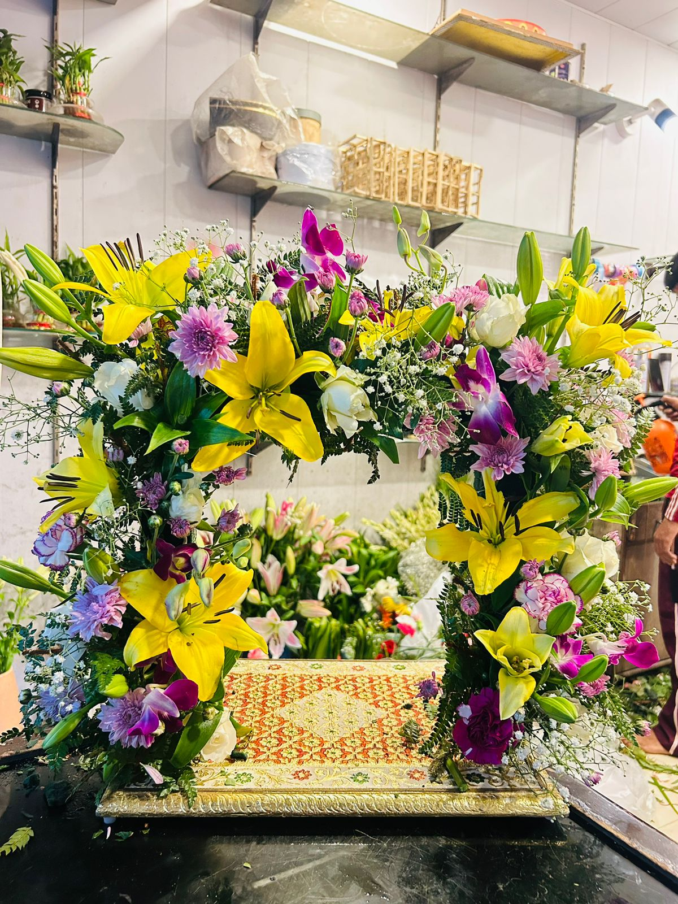
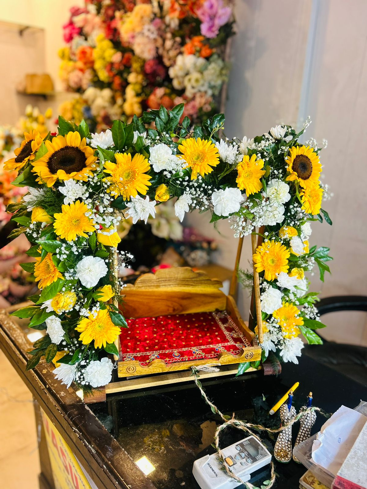
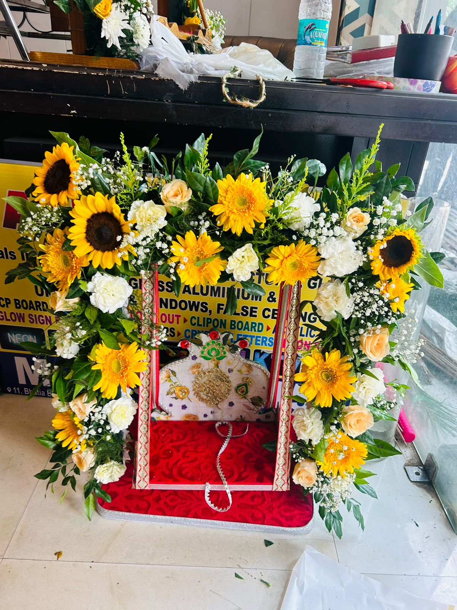
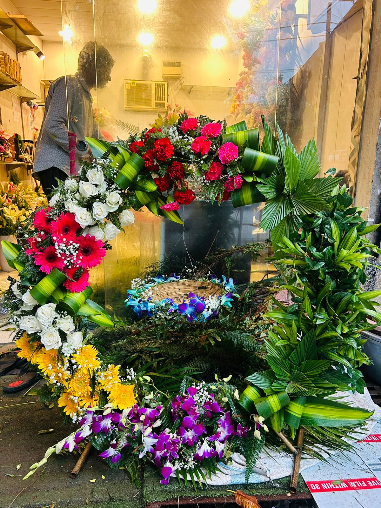
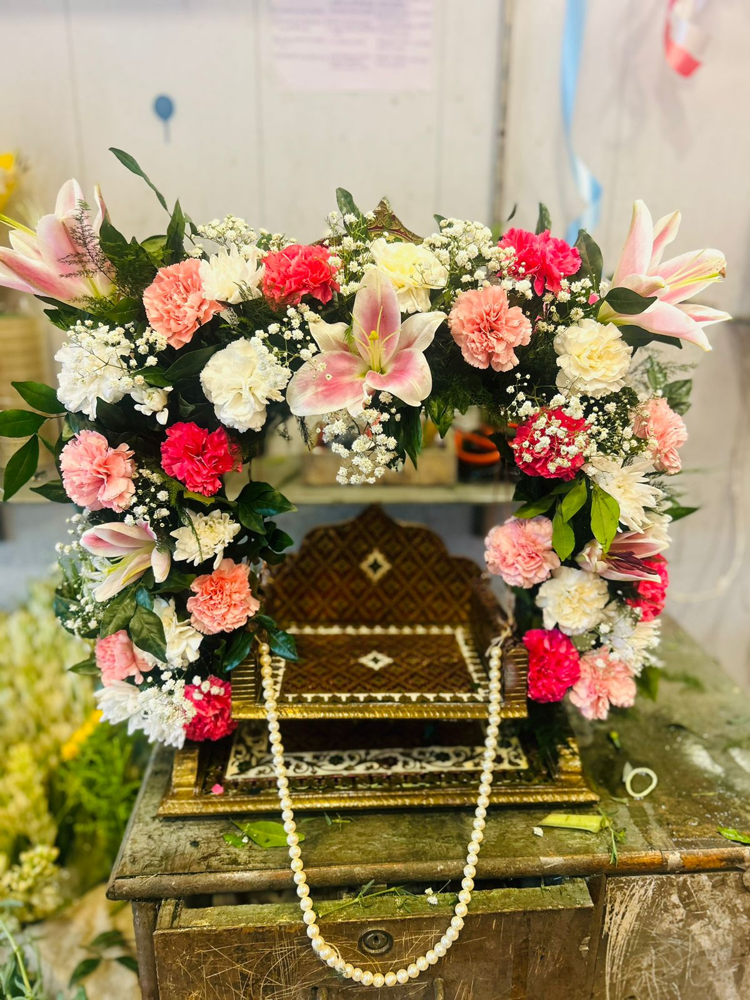
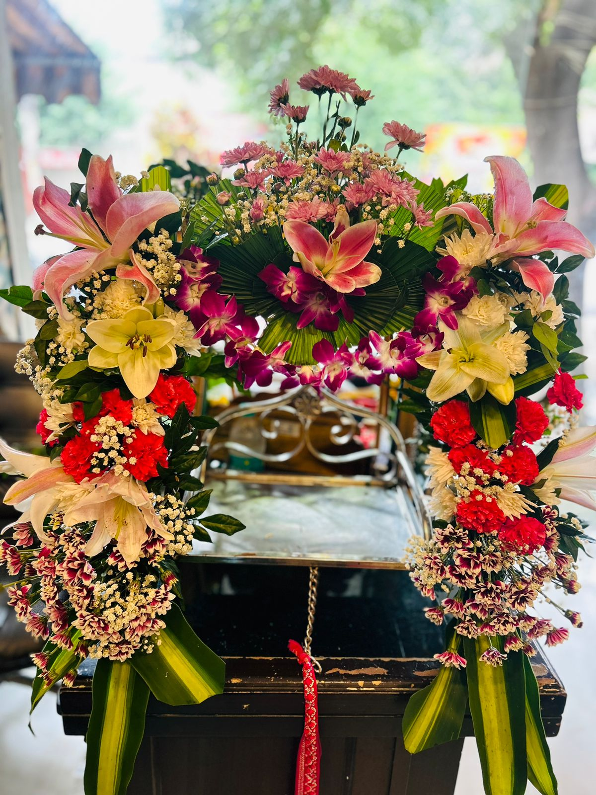

Janmashtami Jhula Flower Decoration for a Small Home Temple

Small Krishna Janmashtami Jhula for Home Mandir
We made these small Janmashtami jhula flower decorations for the celebration of Krishna Janmashtami. Each compact jhula is suitable for a home temple or pooja corner and can be used for Laddu Gopal, Kanha Ji or Bal Gopal during the festival; people searching for Janmasthi jhula decoration, Krishna swing decoration or mandir phool sajawat can choose a design that fits their available space.

Fresh Flower Designs Made by Our Florists
Our florists created the jhulas with fresh lilies, roses, orchids, gerberas, carnations, chrysanthemums, gypsophila and green leaves in different colour combinations. The flowers are arranged around the frame while the seat remains comfortable for the Krishna murti, and customers in Raj Nagar Extension and Indirapuram can contact us to check available flowers and order timing.


Buy a Janmashtami Jhula in Nehru Nagar
Anyone can call us on +91 99998 89817 or visit our shop in Nehru Nagar, Ghaziabad, to buy a ready Janmashtami flower jhula, subject to availability. Customers can view our Nehru Nagar flower service page for the local shop details, and we recommend ordering early because fresh-flower choices and ready jhula stock can change close to Krishna Janmashtami.

Custom Jhula Decoration for Your Krishna Murti
We can also make a custom Janmashtami jhula for your home temple based on the jhula size, Krishna murti size, preferred flowers, colour theme and budget. Share the required measurements and a reference photo when calling, and our team can suggest a practical fresh-flower design; service enquiries are also welcome from customers in Wave City and nearby Ghaziabad areas.
